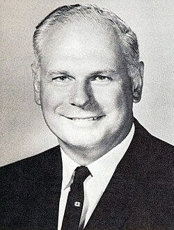

Paul Hellyer
Canadian defence minister, 1923 to 2021

A Liberal member of Parliament for more than twenty years, he was Canada's Minister of National Defence from 1963 to 1967, when he merged the army, navy and air force into a single service. In 1968 Pierre Trudeau named him Senior Minister. 1
In 1967 he opened a UFO landing pad in St. Paul, Alberta, built for Canada's centennial. In September 2005 he said publicly that he believed UFOs were real, and he went on to urge governments to release alien technology to fight climate change. 1
In a 2014 interview with the Russian state broadcaster RT he said at least four alien species had been visiting Earth for thousands of years, mostly from other star systems, with some living on Venus, Mars and "Saturn's moon." He also said there were "about 80 different species," some of which look just like us. He said the visitors would share more of their technology if humans were more peaceful, and that they feared we might use atomic weapons again. He became the highest-ranking former official to make such claims, though he offered no documents, and he repeated the Project Serpo story that its source later admitted was disinformation. 1,2,3
Open in the interactive Watcher
Related
- St. Paul UFO landing pad Opened the St. Paul UFO landing pad
- Ex-defence minister backs UFOs Went public in 2005
- Project Serpo emails Repeated the Serpo story
- Aliens visit Earth and governments are hiding their technology Claim
Sources
- Paul Hellyer Wikipedia
- Canada's Ex-Defense Minister Says Aliens Would Give Earth Tech If We Were Less Warlike Popular Science, Jan. 2014
- Do Aliens Exist? Yes, Some Look Just Like Us, Says Paul Hellyer International Business Times, Jan. 2014